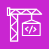

Лекція 18: CI/CD в AWS і AppConfig
Середній рівень: усі правила з повної лекції, але простими словами й без розповіді про наш проєкт. Повна: ../18-cicd-appconfig.md. Факти, які в повній лекції «з пам'яті», тут із позначкою (не звірено). Exam Guide каже, що проєктувати конвеєри не треба, але використовувати треба (навички 3.3.3-3.3.9, 3.1.3-3.1.4, 3.2.1).
Головна ідея
CodePipeline оркеструє, CodeBuild збирає, CodeDeploy деплоїть. AppConfig змінює поведінку застосунку без деплою коду.
Схема: репозиторій → CodePipeline → CodeBuild (тести, збірка) → артефакти в S3 → деплой у staging → manual approval → CodeDeploy canary в prod → rollback за alarm.
Навіщо це так задумано
Конвеєр потрібен, щоб викотка була однаковою щоразу й без ручних помилок. AppConfig відділяє зміну поведінки від деплою коду, тому прапорець можна вимкнути за секунди.
Крок 1. Зіставлення з тим, що ви знаєте
| Звичне | В AWS |
|---|---|
| GitHub | GitHub чи інший репозиторій (CodeCommit поза фокусом C03) |
| GitHub Actions workflow | CodePipeline |
кроки run: |
CodeBuild і buildspec.yml |
DeploymentPreference у SAM |
CodeDeploy |
| GitHub Secrets | Secrets Manager, Parameter Store |
| приватні пакети (npm, Maven) | CodeArtifact |
| environment variables сервісів | AppConfig, Parameter Store |
Крок 2. Словник
| Термін | Суть |
|---|---|
| pipeline | весь процес |
| stage | етап: Source, Build, Deploy |
| action | дія в етапі |
| artifact | файл, що передається між діями |
| transition | перехід між етапами, його можна вимкнути |
| buildspec | рецепт збірки |
| appspec | рецепт деплою |
| deployment group | куди деплоїти |
| feature flag | вмикач функції без деплою |
Крок 3. CodePipeline
- складається з stages, у кожному actions, послідовно чи паралельно; мінімум два stages;
- artifacts передаються між діями (зберігаються в S3-бакеті того ж регіону);
- зміна в джерелі запускає прогін; кнопка Release change перезапускає останню ревізію;
- вимкнений transition зупиняє просування далі;
- manual approval додається дією;
- ланцюг dev → staging → prod (навичка 3.3.5);
- помилка дії зупиняє pipeline; про неї можна отримати сповіщення: правило EventBridge на подію
CodePipeline Pipeline Execution State Changeзі станомFAILEDведе в SNS (навичка 4.2.3);
Крок 4. CodeBuild
Файл buildspec.yml у корені репозиторію (можна інший шлях). Складається з version: 0.2, env, phases, artifacts, cache, reports.
Фази по порядку: install → pre_build → build → post_build. Приклад з документації: вхід в ECR у pre_build, пуш образу в post_build.
В env:
parameter-store: значення з SSM;secrets-manager: значення з Secrets Manager (форматsecret-id:json-key);variables: відкриті значення, для секретів заборонено.
Факти:
- секрети з
parameter-storeіsecrets-managerмаскуються в логах, але тільки точне значення: Base64 від секрету вже видно; - роль CodeBuild потребує
ssm:GetParameters; - пріоритет змінних: запуск > проєкт > buildspec;
finallyвиконується, навіть якщо команда впала;on-failure:ABORT,CONTINUE,RETRY;- логи йдуть у CloudWatch Logs (типово) чи в S3 (за налаштуванням);
- кеш прискорює збірку;
reportsдають звіти тестів.
Крок 5. CodeDeploy
Працює з EC2/on-premises, Lambda, ECS. Файл appspec.yml: для EC2 лежить у корені ревізії, з hooks і скриптами. Для Lambda визначає версію й функції-перевірки, для ECS task definition і load balancer.
Hooks для Lambda: BeforeAllowTraffic, AfterAllowTraffic: це Lambda-функції перевірки (одна може обслуговувати обидва хуки); якщо CodeDeploy не отримав відповіді від перевірки за годину, деплой вважається невдалим. У SAM це DeploymentPreference.Hooks (PreTraffic, PostTraffic).
Порядок для EC2 (за сторонніми описами, офіційну сторінку не відкривав): ApplicationStop → DownloadBundle → BeforeInstall → Install → AfterInstall → ApplicationStart → ValidateService. На EC2 потрібен CodeDeploy agent. Для події DownloadBundle власних скриптів не буває: її виконує сам агент.
Крок 6. Стратегії деплою
| Стратегія | Як | Простій | Відкат |
|---|---|---|---|
| All at once | усе одразу | можливий | новий деплой |
| Rolling | частинами | ні, зменшена потужність | новий деплой |
| Rolling with extra batch | спершу додатковий набір | ні | |
| Immutable | нові інстанси, потім заміна | ні | швидкий |
| Blue/Green | дві копії, перемикання трафіку | ні | миттєвий |
| Canary | малий відсоток, потім решта | ні | автоматичний |
| Linear | рівними частками через інтервали | ні | автоматичний |
Таблиця змішує сервіси. Rolling, Rolling with additional batch і Immutable це політики Elastic Beanstalk, не CodeDeploy. CodeDeploy на EC2/on-premises: AllAtOnce, HalfAtATime, OneAtATime і blue/green (лише EC2, потрібен ELB). Canary і Linear: лише Lambda та ECS.
Canary (наприклад Canary10Percent5Minutes на alias) плюс CloudWatch alarm: якщо alarm спрацював під час деплою, CodeDeploy автоматично відкочує (навичка 3.3.7).
CloudFormation теж відкочує стек при помилці; describe-stack-events показує, що зламалось.
Крок 7. Гілки, версії, середовища
- Навичка 3.3.8: теги git для релізів, гілки для середовищ.
- Навичка 3.2.4: середовища через Lambda aliases, теги образів, Amplify branches, Copilot environments, stages API Gateway.
Крок 8. IaC: CloudFormation, SAM, CDK
| Суть | |
|---|---|
| CloudFormation | YAML/JSON, стеки, основа всього |
| SAM | скорочення над CloudFormation для serverless (Transform) |
| CDK | інфраструктура кодом (наприклад TypeScript), синтезується в CloudFormation |
| Terraform | не AWS-сервіс |
CDK: cdk synth, cdk diff, cdk deploy; cdk bootstrap готує акаунт; тести через aws-cdk-lib/assertions (цю частину не звірено) (навичка 3.2.1).
CloudFormation: change sets (подивитись зміни перед застосуванням), drift detection, DeletionPolicy, intrinsic-функції !Ref, !GetAtt, !Sub.
Крок 9. AppConfig
AWS AppConfig змінює поведінку застосунку без деплою коду: feature flags і динамічна конфігурація. Розгортання миттєве або поступове зі спостереженням: якщо CloudWatch alarm спрацював, автоматичний відкат. Приклад: новий формат вмикається прапорцем для 10% завантажень.
Вибір сервісу конфігурації (навичка 3.1.4):
| Потрібно | Сервіс |
|---|---|
| секрет із ротацією | Secrets Manager |
| просте значення, параметр | Parameter Store |
| feature flag, поступове розгортання, відкат | AppConfig |
| значення на стадії API | Stage variables |
| значення функції | змінні середовища Lambda |
Lambda читає AppConfig через розширення: воно піднімає локальний HTTP-сервер на порту 2772 (за замовчуванням), а функція звертається до нього, а не до API. Ролі потрібні appconfig:StartConfigurationSession і appconfig:GetLatestConfiguration.
Крок 10. Інші інструменти
- CodeArtifact: приватний репозиторій пакетів (npm, Maven, PyPI, NuGet, Cargo, Ruby, Swift, generic); умикається upstream до публічних репозиторіїв (він лише імпортує пакети, назад нічого не публікує).
- Amplify: хостинг фронтенду, гілка дає середовище.
- CloudShell: термінал у браузері.
- AI для CI/CD (навичка 3.3.9): автоматичні перевірки, Kiro.
Крок 11. CodeCommit
Приватні Git-репозиторії AWS без обмеження розміру, керовані й високодоступні; код лишається в акаунті AWS. Статус: з 6 червня 2024 не приймав нових клієнтів, але 24 листопада 2025 AWS знову відкрив його для нових акаунтів.
Крок 12. CodePipeline: категорії дій і діагностика
| Категорія | Що може бути |
|---|---|
| Source | CodeCommit, ECR, S3, Bitbucket, GitHub |
| Build | CodeBuild, Jenkins, CloudBees, TeamCity |
| Test | CodeBuild, Device Farm, сторонні |
| Deploy | CodeDeploy, Beanstalk, CloudFormation, ECS, S3 |
| Invoke | Lambda, Step Functions |
- Артефакти етапу кладуться в S3 і передаються далі.
- Збій етапу зупиняє pipeline. Події про невдалі pipeline чи скасовані етапи йдуть в EventBridge (CloudWatch Events). CloudTrail аудитує виклики API.
Крок 13. CodeBuild простими словами
- серверів нема, збірки йдуть паралельно (черга з'являється лише понад квоту одночасних збірок); платите за хвилини збірки;
- збірка йде в Docker-контейнері (готовий чи власний образ);
- інструкції:
buildspec.yml(env,phases,artifacts,cache) чи вручну в консолі; - артефакти в S3 (шифруються KMS), логи в S3 і CloudWatch Logs, кеш залежностей у S3 прискорює наступні збірки.
Крок 14. CodeDeploy: in-place чи blue/green на EC2
| In-place | Blue/Green | |
|---|---|---|
| Що | оновлює наявні інстанси | створює нову ASG (налаштування копіюються), перемикає трафік |
| Вимоги | CodeDeploy agent | ELB |
| Старі інстанси | оновлюються | завершити чи залишити (налаштовується) |
- Нові інстанси ASG теж отримують деплой автоматично.
- Відкат це повторний деплой раніше розгорнутої ревізії: автоматично (збій чи CloudWatch alarm) чи вручну, або вимкнений. CodeDeploy розгортає останню робочу ревізію як новий деплой.
Крок 15. CodeArtifact і CodeGuru
- CodeArtifact: працює з Maven, Gradle, npm, yarn, twine, pip, NuGet. Resource policy дає іншому акаунту доступ: для читання принципал бачить або всі пакети репозиторію, або жодного (для публікації можна вказати конкретний пакет).
- CodeGuru Reviewer: автоматичне рев'ю коду (статичний аналіз, розробка). CodeGuru Profiler: рекомендації щодо продуктивності в проді (наприклад зайвий CPU на логуванні), показує heap summary.
- Параметри агента Profiler:
MaxStackDepth(глибина стеків у профілі: при 2 і ланцюгу A, B, C, D оцінюються A і B),MemoryUsageLimitPercent,MinimumTimeForReportingInMilliseconds,ReportingIntervalInMilliseconds,SamplingIntervalInMilliseconds. - Статус: Reviewer з 7 листопада 2025 не створює нових асоціацій репозиторіїв, CodeGuru Security закрито 20 листопада 2025; статус Profiler перевірте в актуальній документації (не звірено).
Словник
| Термін | Що це |
|---|---|
| CodePipeline | конвеєр: stages з actions |
| CodeBuild | збірка за buildspec.yml |
| CodeDeploy | розгортання за appspec.yml на EC2, Lambda чи ECS |
| Artifact | файли, які конвеєр передає між етапами |
| Canary / Linear | деплой маленькою часткою чи рівномірно по кроках |
| Blue/Green | нове середовище поруч, потім перемикання |
| AppConfig | зміна конфігурації без деплою коду, з поступовим розкатом |
| Drift detection | пошук ручних змін, що розійшлися з шаблоном |
| CodeCommit | приватний Git-репозиторій AWS |
| In-place / Blue-Green (CodeDeploy) | оновити наявні інстанси чи зробити нову ASG і перемкнути трафік |
| CodeGuru Reviewer / Profiler | рев'ю коду в розробці / рекомендації з продуктивності в проді |
🖼 Схема: CI/CD: ланцюг і CodePipeline

CodeBuild: тести і збірка| Категорія | Що може бути |
|---|---|
| Source | CodeCommit, ECR, S3, Bitbucket, GitHub |
| Build | CodeBuild, Jenkins, CloudBees, TeamCity |
| Test | CodeBuild, AWS Device Farm, сторонні |
| Deploy | CodeDeploy, Elastic Beanstalk, CloudFormation, ECS, S3 |
| Invoke | Lambda, Step Functions |
🖼 Схема: CI/CD: CodeBuild і buildspec
- Docker образ: готовий або власний
 S3 cache, необовʼязково: зберегти й отримати частини для повторного використання
S3 cache, необовʼязково: зберегти й отримати частини для повторного використання
- логи в CloudWatch Logs або S3
- артефакти в S3
- env: змінні
- phases: команди
- artifacts: що завантажити в S3
- cache: залежності для швидших збірок
- без черги збірок
- платите за хвилини
- серверів не підтримуєте
- під капотом Docker
🖼 Схема: CI/CD: CodeDeploy in-place, blue/green, відкат
- оновлює наявні EC2
- потрібен агент CodeDeploy
- нові інстанси ASG теж отримають деплой
- відкат: повторний деплой попередньої версії
- нова ASG з копією налаштувань
- на EC2 потрібен ELB (on-premises не підтримує)
- трафік на нові, старі зняті
- старі: завершити чи залишити
- відкат швидший: трафік назад
| Стратегія | Простій | Відкат |
|---|---|---|
| All at once | можливий | новий деплой |
| Rolling | ні, потужність зменшена | новий деплой |
| Immutable | ні | швидкий |
| Blue/Green | ні | миттєвий |
| Canary | ні | автоматичний |
| Linear | ні | автоматичний |
Що запам'ятати на іспит
- CodePipeline оркеструє (мінімум 2 stages), CodeBuild збирає, CodeDeploy деплоїть.
buildspec.yml:install→pre_build→build→post_build.appspec.ymlдля CodeDeploy; для EC2 потрібен агент.- Секрети в buildspec:
parameter-storeіsecrets-manager, неvariables. - Canary плюс alarm: автоматичний відкат.
- Конфіг без деплою, поступово, з відкатом: AppConfig.
- Ручне підтвердження перед продом: manual approval у CodePipeline.
- Blue/green на EC2 вимагає ELB; відкат CodeDeploy це новий деплой останньої робочої ревізії.
- Артефакти між етапами йдуть через S3; збої pipeline видно через EventBridge.
- CodeBuild: без серверів і черги, оплата за хвилини, кеш у S3.
- CodeGuru: Reviewer (розробка), Profiler (прод).
- CodeArtifact resource policy: читання лише всі пакети репозиторію або жодного (публікація може бути на конкретний пакет).
Перевірте себе
- Як додати ручне підтвердження перед продом?
- Де лежить
buildspec.ymlі який порядок фаз? - Як передати секрет у збірку безпечно?
- Який файл керує CodeDeploy і де він лежить для EC2?
- Чим canary відрізняється від linear?
- Як автоматично відкотити Lambda при помилках?
- Як вимкнути функцію в проді без деплою?
- Який сервіс зберігає приватні npm-пакети?
- Чим CDK відрізняється від SAM?
Відповіді
- Дія manual approval у CodePipeline.
- У корені репозиторію.
install,pre_build,build,post_build. - Через
env.parameter-storeчиenv.secrets-manager(маскуються в логах), не черезvariables. appspec.yml, у корені ревізії.- Canary: малий відсоток, потім решта. Linear: рівними частками через інтервали.
- Canary чи linear у CodeDeploy плюс CloudWatch alarm.
- AppConfig feature flag.
- CodeArtifact.
- CDK це інфраструктура кодом, що синтезується в CloudFormation. SAM це скорочений синтаксис шаблонів CloudFormation для serverless.
Повна версія: 18-cicd-appconfig.md.